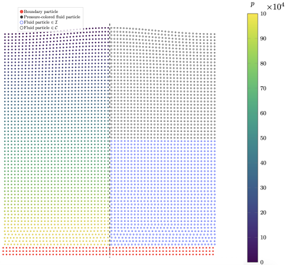

Research
Research
Simulating morphogenetic models
Self-organizing shapes emerge from the interaction of physics and geometry. Here, we solve the non-linear and second-order reaction-diffusion equations within the continuously deforming surface, and allow for local growth depending on the concentration of the surface chemical. The PDE and the observed Turing patterns in the surface are influenced by the local emerging curvature, and the local curvature is determined by the PDE dynamics in the surface: A full feedback loop, from which organic shapes arise.
Manuscript in preparation.
Adaptive sampling of surfaces
Sampling curved surfaces with local regularity and global adaptivity is a long-standing problem in computer graphics and numerical methods. In this work, we use a gradient descent constrained to the curved surface to regularize point distributions for analytical surfaces and obtained from 3D scanning devices such as the 3D Stanford bunny.
The computed point discretizations of the curved surface allow for straightforward rendering without artifacts and robustness and accuracy of numerical methods during simulations.
Currently under revision. Preprint is available at
arXiv:2605.03803
.


Describing and quantifying dynamic surfaces in numerical simulations
Real-world problems involve complex, and often dynamic surfaces. Either as boundary conditions, or as the domain of interest. An illustrative example of a dynamic surface is a hydrodynamic, incompressible droplet under surface tension, governed by the multi-phase Navier-Stokes equations.
To track the surface, we propose a method based on local high-order polynomial regression, enabling the computation of derivative geometric quantities such as surface normals and mean and Gaussian curvatures.
The paper is available at the
Journal of Computational Physics
.
Saving computational resources in water wave simulations
Adaptive resolution methods that place more computational nodes where required are a classic approach to reduce computational effort and accordingly speed up simulations, while retaining high accuracy. In this work, we proposed a different approach: While the point discretization of the domain of interest is homogeneous, we use a higher-order variant of Smoothed Particle Hydrodynamics (SPH) in regions with demand for high accuracy, and a standard, more cost-efficient variant in the other regions. Especially for deep water waves, this enables a much faster simulation of water wave propagation.
This work was presented at the SPHERIC 2022 International Workshop and its proceedings paper is available at
arXiv:2511.10064
.
